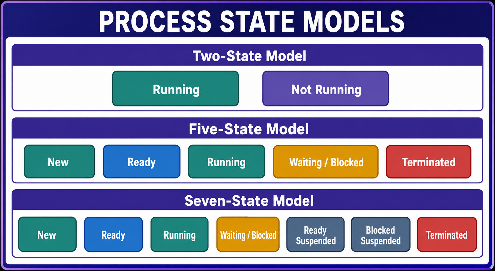
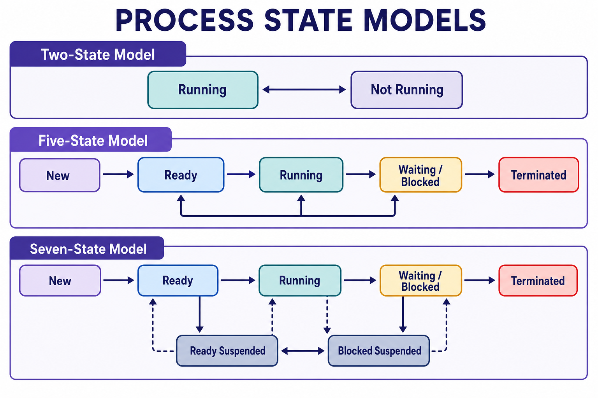

States of a Process
Two-State, Five-State, and Seven-State models, dispatcher, transitions, and suspended states.


Two-State, Five-State, and Seven-State models, dispatcher, transitions, and suspended states.

